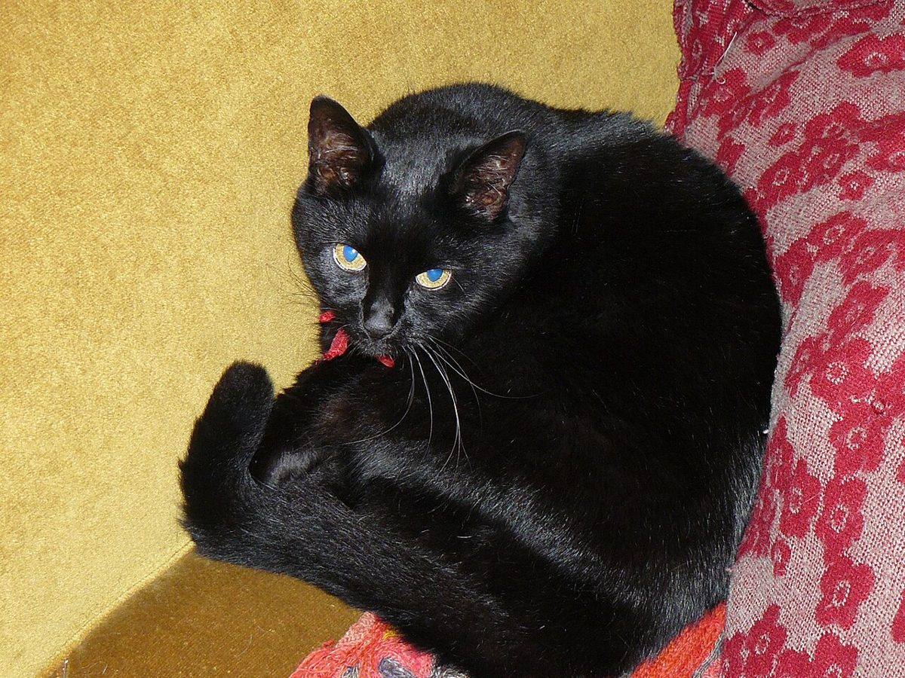

口コミ
こんな気持ちかもしれない
まだ行っていない人が抱きそうな気持ちを、制作側が創作したものです。
以下は制作側が考えた創作のイメージ例で、実在のお客様の投稿ではありません。実際の口コミ・評価とは関係ありません。
いつかInstagramをのぞいてみたいお店です。どんな投稿があるのか、見てみようと思っています。
加古川市のベーカリーとして、いつか行ってみたいと思っています。まずは写真を見るところから始めたいです。
営業時間などが分かったら、行ってみたいです。それまでは、Instagramの更新を楽しみにしています。
